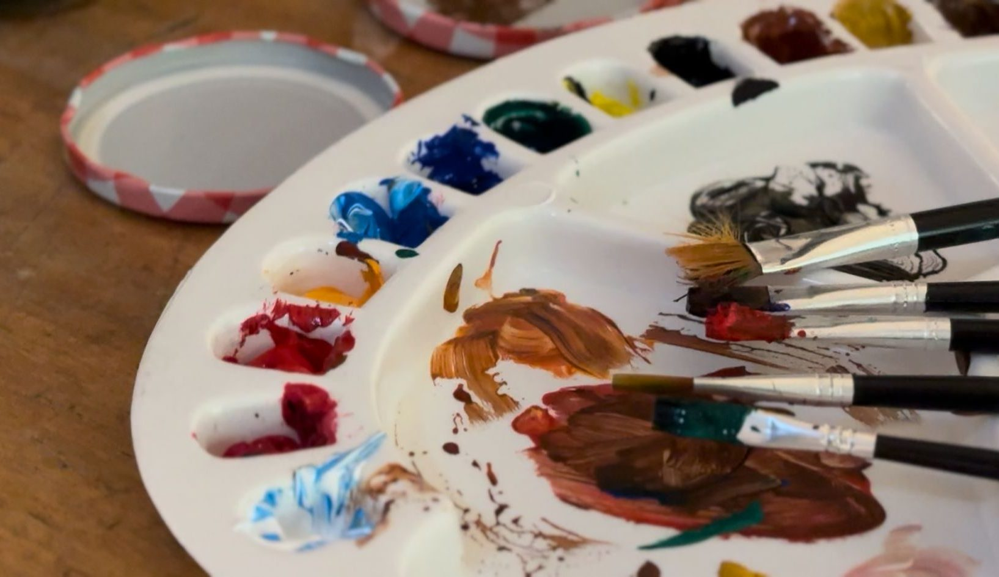
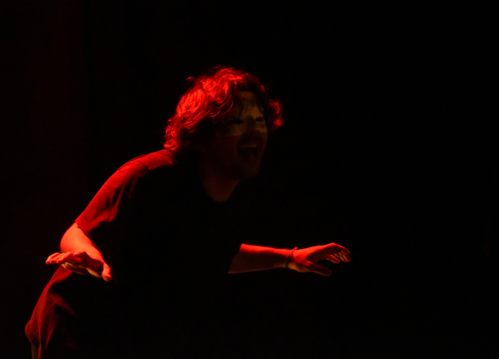
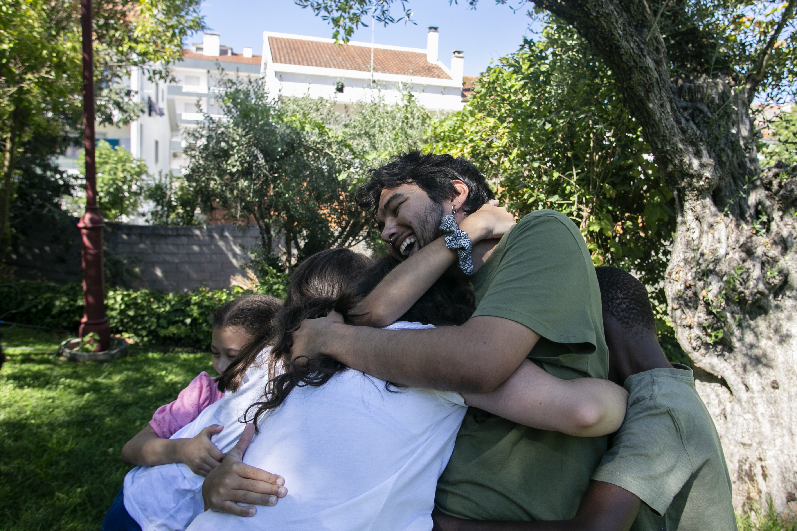
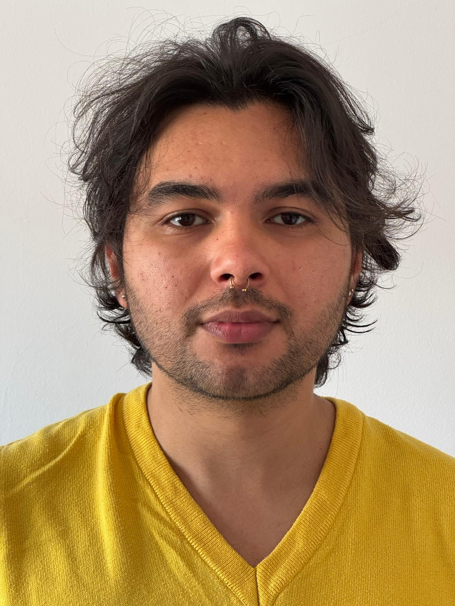

Investigação aliada à prática artística, performance e criação coletiva.
Como investigador e artista multidisciplinar, pesquiso como corpos, espaços e criações coletivas se entrelaçam na expressão artística. Doutorando em Arte Contemporânea no Colégio das Artes da Universidade de Coimbra.
Artes Visuais

Performance

Arte Comunitária

Portfólio
Biografia & Trajetória

Como investigador e artista multidisciplinar, pesquiso como corpos, espaços e criações coletivas se entrelaçam na expressão artística.
Meu nome é João Pedro Schwingel Carada, sou investigador e artista multidisciplinar brasileiro, atualmente doutorando em Arte Contemporânea no Colégio das Artes da Universidade de Coimbra, Portugal. Minha investigação explora agenciamento, espacialidade e estado de presença em performances coletivas. Com formação inicial em música (Licenciatura e Mestrado em Performance), toquei diversos instrumentos — do oboé, saxofone e clarinete a instrumentos tradicionais da Capoeira (que pratiquei durante seis anos) —, expandindo a relação entre escuta, dramaturgia sonora, corpo e presença física.
No centro do meu trabalho está a crença na arte como força comunitária e território de encontro. Seja através da performance, do teatro, da instalação sonora ou da mediação artística, busco criar espaços onde as pessoas possam colaborar, experimentar e expressar-se livremente. Nos últimos anos, imergi no teatro, na performance contemporânea, na gestão cultural e na criação interdisciplinar no Teatro dos Estudantes da Universidade de Coimbra (TEUC) e no Colégio das Artes.